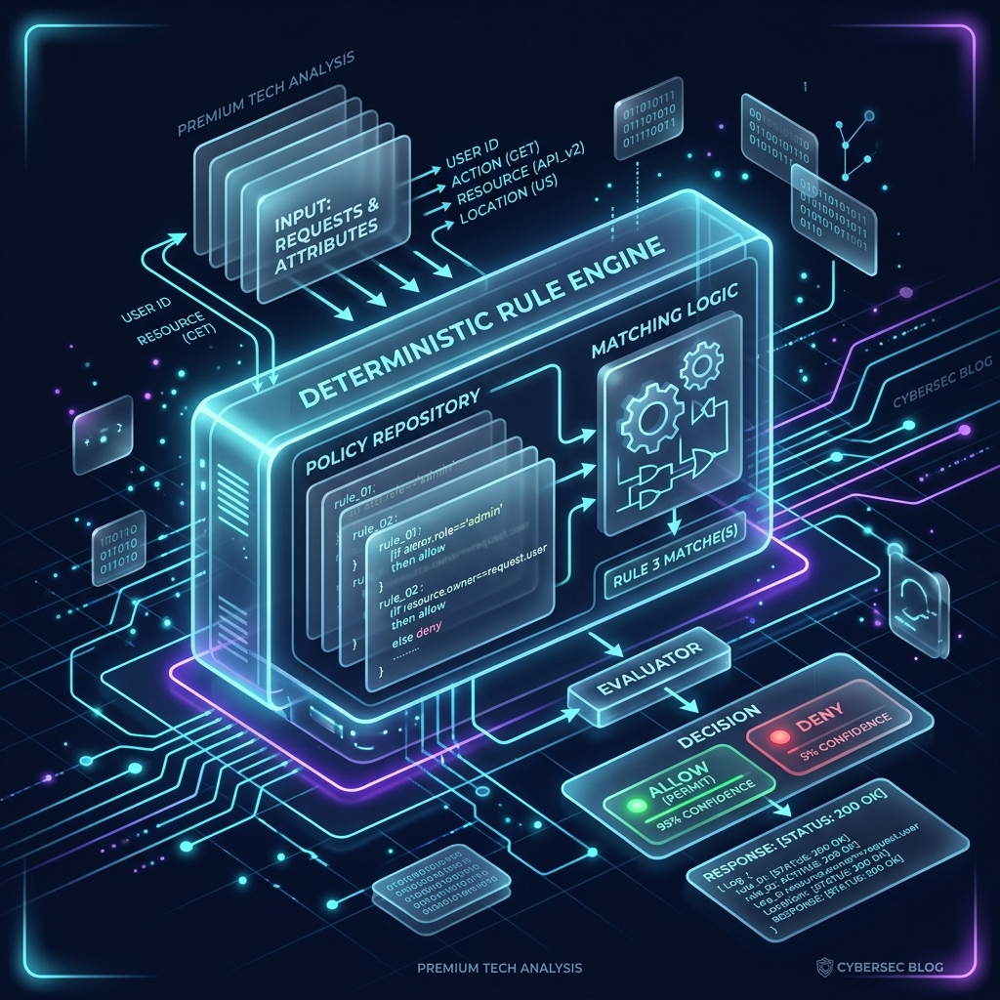

User Consent Frameworks: Implementing Cryptographic Handshakes for High-Value Transactions

Autonomous agents operate in the background, executing workflows when we sleep or focus on other tasks. While low-value transactions (e.g., pulling public data or booking a standard calendar invite) can be automated entirely, high-value actions demand human oversight. The challenge is implementing this without grinding workflows to a halt. The solution lies in out-of-band cryptographic handshakes, utilizing technologies like WebAuthn and passkeys to bridge the gap between AI autonomy and user control.
The Human-in-the-Loop Threshold
A secure autonomous framework requires defining an explicit boundary policy. If an agent initiates an action that crosses this threshold, it is placed in a "PENDING_CONSENT" state. The validation engine intercepts the request and generates a temporary verification challenge containing the transaction hash and a short TTL (Time to Live).
The system routes this challenge to the user's registered authenticator app or browser session. Until the user signs the challenge with their local hardware key (such as Touch ID or a security key), the transaction remains blocked.
Implementing the WebAuthn Challenge Lifecycle
When the validator catches a high-value intent, it requests a cryptographic signature from the user. This signature is verified at the gateway using the user's registered public key, guaranteeing that the action was explicitly approved by a human.
# Mock WebAuthn challenge verification flow in Python
from cryptography.hazmat.primitives.asymmetric import ec
from cryptography.hazmat.primitives import hashes
def verify_user_consent(challenge: bytes, user_signature: bytes, public_key: ec.EllipticCurvePublicKey) -> bool:
try:
# Verify that the user signed the exact transaction challenge
public_key.verify(
user_signature,
challenge,
ec.ECDSA(hashes.SHA256())
)
return True
except Exception:
# Signature mismatch or expired challenge
return FalseKey Benefits of Cryptographic Consent
- Phishing-Resistant MFA: Using WebAuthn guarantees that approvals cannot be stolen or intercepted via social engineering.
- Tamper-Proof Authorization: The signature is mathematically bound to the transaction parameters, ensuring the agent cannot modify the payload after approval.
- Low-Friction Approvals: Biometric checks (Touch ID / Face ID) allow users to authorize operations securely in under two seconds.
A Balanced Approach to AI Security
Integrating cryptographic handshakes into your AI architecture ensures that high-impact operations are always backed by user intent. It empowers organizations to deploy autonomous agents with confidence, knowing that a human remains in control of critical decisions.
Enterprise M&A Inquiry
For technical due diligence or architectural deep-dives into our zero-trust framework, please request access to our tech specs and roadmap.
Request Tech Specs